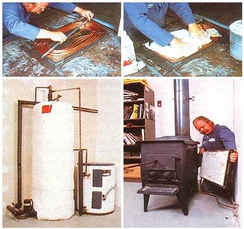

FAR LEFT: First, the coil of copper tubing is positioned inside the angle- iron frame. LEFT: Then plaster of paris is worked in around the tubing. LOWER LEFT: Water warmed in the coils is piped to a storage tank that feeds into the main heater. BELOW: The assembly simply bolts to the side of the woodstove.